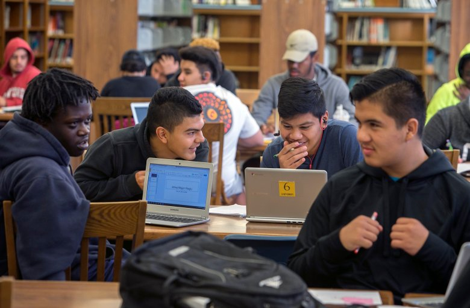

Here is what has happened so far this year (More details here):
January
Mayor Liccardo resigns from FCC Broadband Deployment Advisory Committee, citing overwhelming industry influence
September
FCC releases rules limiting local control, restricting cities’ abilities to regulate 5G infrastructure, justifying them as the key to speeding their deployment while creating really short deadlines for approval and limiting how much cities can charge companies’ for their public infrastructure.
October
San José, with 20+ cities and organizations, files a lawsuit challenging the overreach of these FCC rules.
November
Mayor Liccardo publishes an op-ed in the New York Times on this issue. FCC Commissioner Carr responds with his own op-ed in The Mercury News. Mayor Liccardo scrutinizes these falsehoods on his own op-ed in the Mercury News and Shireen publishes an op-ed on CityLab laying out how the FCC has sold us out on this issue.
Our work Influencing Policy:
In 2017, Mayor Liccardo was appointed to the FCC’s Broadband Deployment Advisory Committee, a national body of community and business leaders that recommends policies to the FCC around broadband. However, the body was stacked with industry personnel with few local government voices advocating for the public. After working in good faith for over 9 months on the body and despite the best effort of many individuals, in January of 2018, Mayor Liccardo resigned from the committee, citing his frustration with the group’s clear bias toward serving industry interest.
We didn’t walk away from this fight - in fact we raised our concerns in Congress and the Senate. Here at home in San José, we doubled down to make sure our residents received improved broadband service and took steps to address the digital divide. We recently signed deals to get over $500M in broadband investment into San José and set up a Digital Inclusion fund to bridge the digital divide with initiatives like internet access for students in East Side Union High School District.
Overfelt High School students, from right, Santiago Rivera, 16, Juan Bailon, 15, Nicho Dimas,15, and Imani Kilgore, 16, socialize and work on Chromebooks at the Overfelt High School Library in San Jose, Calif., on Saturday, October 1, 2016. (LiPo Ching/Bay Area News Group)
However, in late September of this year, the FCC released new rules restricting cities’ abilities to regulate 5G infrastructure, justifying them as the key to speeding their deployment. Under these new rules, local governments face tight deadlines to approve or reject the installation of this new cellular equipment. The rules also put limits on how much money cities can charge wireless firms for the privilege of putting hardware in public rights of way. The rules also directly endangered our deals with the telecommunication companies, especially the portion that would go towards our Digital Inclusion fund and related programs. In facing these new rules, in October, we joined over 20 cities, as well as the U.S. Conference of Mayors, the National League of Cities, and the National Association of Counties in filing a lawsuit against the FCC over these new rules. You can read more from Ars Technica here: Cities will sue FCC to stop $2 Billion giveaway to wireless carriers.

Photo: Small Cells being connected to fiber, and later fully deployed in San José City Hall Plaza. It has the typically antenna top (top hat), two small grey radios (mid pole), and one electrical shut off box. It is painted a light gray and is unobtrusive.
This month, Mayor Liccardo’s New York Times op-ed, detailed how the FCC’s recent policies force “a taxpayer subsidy to Big Telecom companies”. In response, FCC Commissioner Brendan Carr, a Republican appointee to the FCC under the current President, who voted alongside FCC Chairman Pai to repeal net neutrality and who previously represented Big Telecom clients, mounted an attack with an op-ed in the Mercury News to condemn our “record of broadband failure”. You can read Mayor Liccardo’s response op-ed, where he scrutinizes the falsehoods in Carr’s op-ed: Opinion: FCC proves it doesn’t get the innovation economy. You can also read Shireen's op-ed on the issue published early this week: Hey FCC, Low-Income Americans Need Broadband Too.